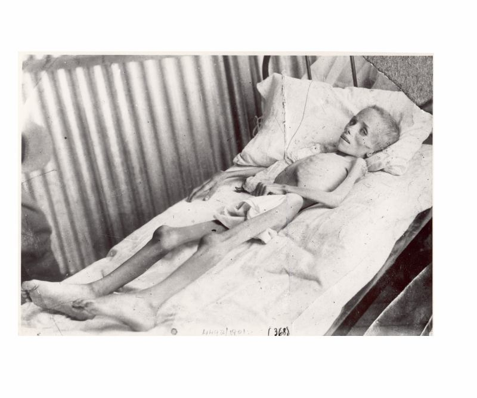

Tragedia y la Esperanza 101 - Capítulo 2
Esta es la versión gratuita en español de Tragedia y Esperanza 101. Las versiones Kindle, de bolsillo y en audiolibro están disponibles en Amazon.
Capítulo 2
El poder detrás del trono
Como ya lo hemos mencionado, Quigley no era el típico historiador. A diferencia de la mayoría de los académicos respetados, él no tenía miedo de hablar sobre la presencia de conspiradores secretos ejerciendo el poder desde las sombras. Tampoco tenía miedo de señalar que las constituciones, los parlamentos, presidentes y emperadores podían ser utilizados como elementos de distracción para desviar la atención del verdadero poder gobernando detrás del trono. A modo de ejemplo, cerca de la página 190 de Tragedy and Hope, Quigley describe con claridad las cosas respecto a la llamada Restauración Meiji en Japón.
Vista desde afuera, la Restauración arrebató el poder a los shogunes y lo devolvió al emperador japonés. Sin embargo, aunque esta historia del regreso del emperador al poder se extendió a lo largo y ancho del país, la realidad fue muy diferente. Lo que realmente ocurrió fue que la Restauración simplemente había trasladado el poder de los shogunes a los señores feudales que "procedieron a gobernar Japón en nombre del emperador, y bajo su sombra."[1]
Estos líderes, organizados en un oscuro grupo conocido como la Oligarquía Meiji, habían logrado, en 1889, la total dominación de Japón. Para camuflar este hecho, desataron una vigorosa propaganda para promover la sumisión abyecta al emperador que culminó en su extrema adoración entre 1941 y 1945.
Para proporcionar una base administrativa a su gobierno, la Oligarquía creó una extensa burocracia gubernamental y, para otorgarle una base económica, esta misma Oligarquía utilizó su influencia política para pagarse abultadas pensiones y subvenciones gubernamentales y [desarrollaron] relaciones comerciales corruptas con sus aliados en las clases comerciales... Para proveer de una base militar a su gobierno, la Oligarquía creó un nuevo ejército y una marina imperial y se infiltró en sus filas superiores para poder dominarlas, tal como ya lo hacía con la burocracia civil. Para proporcionar una base social a su gobierno, la Oligarquía creó cinco... categorías de nobleza, cuyos integrantes fueron reclutados entre sus propios miembros y seguidores.
Después de asegurar así su posición dominante, en 1889 la Oligarquía elaboró una constitución que les garantizaría, y sin embargo ocultaría, su dominación política del país.[2]
La Oligarquía presentó la constitución como si hubiera sido "emitida por el emperador para crear un sistema en el que todo el gobierno estaría en su nombre, y todos los funcionarios serían personalmente responsables ante él."[3]
Esta constitución, aparentemente legítima, requería de un cuerpo legislativo compuesto por una Cámara de Representantes y una Cámara de Pares. Aunque estas disposiciones se promulgaron, resultaban esencialemente insignificantes:
La forma y el funcionamiento de la constitución fue de poca importancia, ya que el país continuó siendo dirigido por la Oligarquía Meiji a través de su dominio del ejército y la marina, la burocracia, la vida económica y social, y las agencias de creación de opinión pública tales como la educación y la religión.[4]
Así como lo hacen todas las clases dominantes, los Meiji mantuvieron su dominación adoctrinando a las masas en una ideología que servía a los intereses de los oligarcas. En concreto, propagaron la ideología Shinto, que abogaba por la subordinación al emperador. "En este sistema, no había espacio para el individualismo, el interés propio, las libertades humanas ni los derechos civiles."[5]
Los japoneses aceptaron esta ideología Shinto y, como consecuencia, la oligarquía Meiji pudo explotarlos sin piedad en nombre del emperador. Sin embargo, curiosamente, los Meiji debían rendir cuentas a un poder aún mayor. Detrás de ellos, existía otro grupo, el cual no se componía de más de una docena de hombres que representaban el máximo poder de decisión en Japón. Quigley explica:
Este grupo de líderes, conocido como Genro, funcionó por encima del sistema legal. Robert Reischauer escribió en 1938 que: "Estos hombres son quienes han detentado el verdadero poder detrás del Trono. Se hizo habitual que se les pidiera su opinión y, más importante aún, que se siguiera sus directivas en todo asunto de gran importancia para el bienestar del estado. Jamás, ningún Líder fue nombrado sin la recomendación de estos hombres que se hacían llamar Genro. Hasta 1922, no hubo ninguna legislación nacional importante ni tratado extranjero que escapara a su escrutinio y evaluación antes de ser firmada por el emperador. En su tiempo, estos hombres fueron los verdaderos gobernantes de Japón."[6]
La naturaleza del Poder Coercitivo Secreto
Hay una razón muy lógica por la que la fuerza coercitiva prefiere el secreto y el engaño: si su objetivo es explotar y dominar a los demás (sin sufrir las consecuencias naturales de este acto), la transparencia y la honestidad no son una opción. Como tal, seguir el modelo básico del poder coercitivo (a menudo oculta, siempre engañosa y ejercida en nombre de algo distinto a sí mismo) ha sido algo habitual a lo largo de la historia. Si "el nombre de Dios" es irreprochable, entonces los gobernantes inteligentes ejercen su poder en su nombre. Si invocar la democracia, el estado o el emperador les brinda poder, actuarán en nombre de cualquiera de estas figuras. Ésta es la característica invariable de quienes gobiernan las masas de manera efectiva: ellos dirán y harán cualquier cosa para establecer un sistema que sirva a sus intereses.
Dicho de otra manera: la moralidad nunca detendrá a un individuo (o grupo) que esté dispuesto a mentir, robar, intimidar, encarcelar, torturar o matar para conseguir sus objetivos. De la misma manera, un trozo de papel con palabras escritas (una constitución) y una forma democrática fácilmente manipulada de gobierno tampoco lo detendrá. Este último punto es particularmente relevante hoy en día debido a que los "organismos de formación de opinión pública" han hecho todo lo posible para convencernos de lo contrario.
Desde una muy temprana edad, estamos condicionados a creer que una constitución y unas elecciones democráticas demuestran, de alguna manera, que tenemos el control; que aquellos que buscan ejercer un poder ilegítimo sobre nuestras vidas no pueden tener éxito con estas protecciones de nuestro lado. Nunca nos preguntamos si esta creencia es realmente cierta, y nunca se nos proporcionan ejemplos que podrían sugerir que eso no es cierto. Por ejemplo, ¿protegieron al pueblo ruso la constitución y las elecciones de "apariencia y forma democrática"[7] de la Rusia estalinista? ¿Logró un gobierno, que era "democrático en forma"[8], impedir el ascenso de Hitler en Alemania? ¿Es la "República Democrática Popular" de Corea del Norte, con sus elecciones regulares, una verdadera república? ¿Fueron los Genro incapaces de gobernar Japón como consecuencia de la constitución y las elecciones japonesas? Un poco más cerca de casa, ¿qué pasa con las protecciones garantizadas previstas en la Constitución de los Estados Unidos? ¿Son estas protecciones escritas suficientes para bloquear las depredaciones cometidas por una clase gobernante ilegítima? Si usted piensa que sí lo son, considere lo siguiente:
Hoy en día, en "la nación más libre sobre la Tierra," los representantes de los Estados Unidos se han arrogado la autoridad para espiar a sus ciudadanos sin orden judicial, lo cual, claramente, viola la Constitución de los Estados Unidos. Se han atribuido la autoridad para arrestar y detener a los ciudadanos sin que haya cargos en su contra, y sin que estos ciudadanos puedan tener el derecho de impugnar la legitimidad de su detención. Esto también viola la Constitución de los Estados Unidos. Incluso se han atribuido la autoridad para matar a ciudadanos de los Estados Unidos basándose en nada más que una acusación, sin ningún juez, ningún jurado, ninguna presentación pública de evidencias o sin requerimientos para demostrar su culpabilidad.[9] Esta es una violación flagrante de las protecciones individuales que se indican en la Constitución de los Estados Unidos.
Dado que los ciudadanos de los Estados Unidos no otorgan a sus representantes la autoridad para violar estas restricciones legales al poder del gobierno, estos poderes debieron haber sido tomados por la fuerza. Los gobernantes toman el poder; los representantes no. Como se ha señalado en el capítulo 1, Quigley se refirió a estos gobernantes como los "expertos" que reemplazarían "al elector democrático para controlar el sistema político."
Es aquí donde realmente se apoyan las afirmaciones acerca de la inevitable destrucción de la soberanía nacional. Ante los ojos de los expertos, es simplemente una cuestión de tiempo antes de que un grupo superior de gobernantes finalmente logre lo que todos los gobernantes anteriores han intentado (el poder suficiente para obligar a la obediencia a todas las regiones del mundo). Quigley explica la progresión del poder coercitivo mundial de esta manera:
El creciente poder destructivo de los sistemas de armas occidentales ha permitido que se pueda exigir obediencia en áreas cada vez más amplias y a un mayor número de individuos. En consecuencia, las organizaciones políticas (como el estado), se han vuelto más grandes en tamaño y menores en número... De esta manera, el desarrollo político de Europa en el último milenio ha dado lugar a una constante consolidación de poder. Eventualmente, miles de áreas feudales se convirtieron en cientos de principados, y estos principados se convirtieron en un menor número de monarquías dinásticas, y, por último, aquellas monarquías dinásticas se convirtieron en un poco más de una docena de estados nacionales. El estado nacional, cuyo tamaño se mide en cientos de kilómetros [solo se hizo posible porque podía) ejercer la fuerza a través de cientos de kilómetros.
A medida que la tecnología de las armas, el transporte, las comunicaciones y la propaganda han continuado desarrollándose, se hizo posible exigir obediencia en áreas medidas en miles y no en cientos de kilómetros y, por lo tanto, en superficies superiores a las ocupadas por los grupos lingüísticos y culturales existentes. Por lo tanto, fue necesario apelar a la lealtad al Estado excediendo los límites del nacionalismo. Esto dio lugar, en los años 1930 y 1940, a la idea de bloques continentales y del estado ideológico (en sustitución del estado nacional).[10]
La consolidación que Quigley describe es más que una colección de datos históricos. Captura la naturaleza inmutable del poder coercitivo. Sin control, los gobernantes siempre querrán consolidar y centralizar su control hasta que no les quede nada de qué apropiarse. Y, por desgracia, esto se aplica tanto a la libertad humana como a los recursos geográficos: "Un paso lleva a otro, y cada nueva adquisición obtenida para proteger una anterior requiere un nuevo avance, en un momento posterior, para protegerlo."[11]
Por lo tanto, si aceptamos esta realidad, tendremos un puñado de preguntas importantes: ¿Quiénes son los gobernantes? ¿Hasta qué punto pueden "exigir obediencia" sin que encuentren una resistencia significativa? ¿Cómo tomaron el poder? ¿Cómo mantienen y expanden su poder? ¿Cuáles son sus crímenes que no reciben castigo (pasados y presentes)? Y lo más importante, ¿cuáles son los blancos estratégicos que se necesitan atacar para destruir su gobierno ilegítimo? En los siguientes capítulos, vamos a cubrir todo esto y más. Pero, en primer lugar, hay que empezar por el principio.
El lugar de nacimiento de una Red
Hace casi mil años, se fundó una universidad en Inglaterra. Casi mil años más tarde, no sólo esa misma universidad aún existe, sino que ocupa la posición número uno en el Reino Unido y, consistentemente, se ha venido clasificando entre las diez mejores universidades del mundo.[12]
Como una de las más prestigiosas instituciones de educación superior especializada en política, ciencias psicológicas y negocios, Oxford tiene una historia larga y distinguida. Allí se han formado docenas de primeros ministros, al igual que arzobispos, santos, famosos economistas como Adam Smith, y reconocidos escritores como R. R. Tolkien (El Señor de los Anillos) y Aldous Huxley (Un mundo feliz), así como filósofos como Thomas Hobbes y John Locke. Oxford también formó, hace aproximadamente ciento cincuenta años, a los progenitores de la Red. Viajemos en el tiempo a este preciso momento de la historia, alrededor de 1860.
Dos fuerzas opuestas en el Imperio Británico están en conflicto. Por un lado, muchos argumentan que el imperio es inmoral, caro e innecesario. Este argumento, defendido por hombres como William Gladstone, está erosionando el apoyo a las políticas imperiales de Gran Bretaña. En el otro lado, se encuentra Benjamin Disraeli. Este hombre, un cercano aliado de la reina, es un duro crítico de Gladstone y otros "Little Englanders" ("Pequeños Ingleses") que se atreven a desafiar los beneficios y la necesidad del imperio. Tras referirse a Gladstone como "el único error de Dios", la intensa rivalidad entre Disraeli y Gladstone es legendaria. A continuación, se proporciona un ejemplo de sus muchos desacuerdos:
Disraeli y Gladstone se enfrentaron por la Política Balcánica de Gran Bretaña. Disraeli creía que era necesario defender la grandeza de Gran Bretaña a través de una política exterior resistente "directa y eficiente", que ponía los intereses de Gran Bretaña por encima de la "ley moral", que defendía la emancipación de las naciones pequeñas. Gladstone, sin embargo, veía el problema en términos morales: los turcos habían masacrado a los cristianos búlgaros y, por lo tanto, creía que era inmoral apoyar al Imperio Otomano.[13]
Dado que los argumentos morales de Gladstone fueron ganando terreno, se formó un nuevo instituto para contrarrestar la creciente ola de anti-imperialismo. Quigley dice:
El Real Instituto Colonial fue fundado en 1868 para luchar contra la idea de la "Pequeña Inglaterra"; como primer ministro (1874-1880), Disraeli dramatizó el beneficio y el glamour del imperio refiriéndose a acciones tales como la compra del control del Canal de Suez y el otorgamiento a la reina Victoria el título de Emperatriz de la India; a partir de 1870 fue cada vez más evidente que las colonias, sin importar que pudiesen ser costosas para un gobierno, podrían ser increíblemente rentables para los individuos y las empresas apoyadas por dichos gobiernos.[14]
Entonces, para proteger los beneficios de las políticas imperiales de Gran Bretaña, la retórica utilizada para justificar el imperialismo lentamente empezó a cambiar. Un hombre, nombrado para ocupar una nueva cátedra en Oxford, se hizo cargo de la cruzada para enseñar "el nuevo imperialismo" a los estudiantes de licenciatura de esta casa de estudios.
El nuevo imperialismo después de 1870 era muy diferente al que los "Little Englanders" se habían opuesto anteriormente. El principal cambio fue que estaba justificado por cuestiones de deber moral y reforma social y no, como el anterior, por la actividad misionaria y las ventajas materiales. El principal responsable de este cambio fue John Ruskin.
Ruskin las hablaba a los estudiantes de Oxford como miembros de una clase dominante privilegiada. Él les dijo que ellos eran los poseedores de una magnífica tradición que abarcaba la educación, la belleza, el estado de derecho, la libertad, la decencia y la auto-disciplina, pero que esta tradición no se podía preservar, y tampoco lo merecía, a menos que se pudiese extender a las clases bajas en la propia Inglaterra y a las masas extranjeras en todo el mundo. Si esta preciosa tradición no se extendía a estas dos grandes mayorías, la minoría de la clase alta de los ingleses se desvanecería, en última instancia, bajo estas dos mayorías y toda su tradición se perdería.[15]
Sobre la base de estas nuevas justificaciones, las mismas políticas inmorales de conquista y sometimiento encontraron una nueva razón. Ahora, el imperio era no sólo una cuestión de deber moral; era una cuestión de auto-preservación (si la élite gobernante no lograba expandir el imperio, su forma de vida civilizada se perdería bajo las masas de la plebe). Era un mensaje de gran alcance, y tuvo un " impacto tremendo " en uno de los estudiantes de Ruskin. Este estudiante estaba tan conmovido que copió las cátedras de Ruskin palabra por palabra y las conservó durante treinta años.[16] También, con un puñado de otros devotos de Ruskin, incluso fundó y financió la Red, que Quigley denominó como "uno de los hechos históricos más importantes del siglo XX."[17] El nombre de aquel estudiante era Cecil Rhodes.
Si ha oído hablar de Cecil Rhodes, es muy probable que no haya sido dentro del contexto de ser "el tipo que creó una sociedad secreta para controlar el mundo." Sin embargo, sí es posible que haya oído hablar de las becas Rhodes en Oxford (o quizá el término Becario Rhodes, un título dado a los estudiantes que estudiaron bajo su programa).[18] Tal vez usted escuchó hablar de la nación africana de Rhodesia, o de la Universidad de Rhodes situada en África del Sur, ambas nombradas en honor a Rhodes. Si alguna vez ha comprado un diamante, es probable que haya oído hablar de la empresa de diamantes De Beers (el monopolio de diamantes de Sudáfrica establecido por Rhodes).
Estos hechos actúan como un testimonio de la extraordinaria vitalidad e influencia de Cecil Rhodes. Pero lo más significativo que Rhodes fundó durante su vida no lleva su nombre, y se mantiene casi completamente en el anonimato. Esto a pesar del hecho de que la sociedad secreta fundada por él en 1891,[19] y sus posteriores "instrumentos", sigue funcionando en la actualidad.
Construyendo la Red
Rhodes extrajo gran parte del financiamiento inicial para su sociedad secreta de las minas de oro y diamantes de Sudáfrica. Después de monopolizar estas industrias, la enorme riqueza e influencia que le reportaron le permitieron aumentar constantemente el alcance de la Red. Quigley nos explica:
Rhodes explotó febrilmente el diamante y las minas de oro de Sudáfrica, llegó a ser el primer ministro de la Colonia del Cabo (1890-1896), aportó dinero a los partidos políticos, controló escaños tanto en Inglaterra como en África del Sur, y trató de obtener una parte del territorio británico a lo largo de África desde el Cabo de Buena Esperanza hasta Egipto.[20]
No es de extrañar, pues Rhodes no sentía ningún conflicto moral sobre sus intereses imperiales o los métodos que utilizó para alcanzarlos. Se veía a sí mismo como alguien superior frente a quienes tenía la intención de someter. En su última voluntad y testamento, escribió:
Afirmo que somos la mejor raza en el mundo y que nuestra expansión por el mundo será lo mejor que podrá ocurrirle a la raza humana. Fantaseo con que aquellas partes que se encuentran en la actualidad habitadas por los ejemplares más despreciables de seres humanos pasen a estar bajo la influencia anglosajona.[21]
Una serie de PBS titulada Queen Victoria's Empire responsabiliza a Rhodes de instigar una ráfaga de "fervor imperialista" en Gran Bretaña. Cerca del final de este trabajo, se dice de Rhodes que:
Cecil John Rhodes se convirtió en el más grande constructor del imperio de su generación. Para financiar sus sueños de conquista, se embarcó en una búsqueda despiadada de diamantes, oro y poder, lo que lo convirtió en el hombre más formidable, y más odiado, en África.
Pero esta historia es mucho más grande que el efecto que Cecil Rhodes tuvo sobre África o el imperialismo británico hace más de un siglo. Obviamente, para relatar correctamente la historia de la Red, necesitan mencionarse un puñado de individuos tan importantes como Rhodes. Sin embargo, para ser claros, estos individuos no son el foco principal de esta historia. En su lugar, nuestro foco caerá sobre todo en los instrumentos que Rhodes y sus seguidores crearon o infiltraron, así como en las tácticas que emplearon para perseguir en secreto sus objetivos. (A pesar del poder que algún individuo que integró o actualmente es parte de la Red pudo tener, es en los instrumentos y las tácticas dónde está realmente el poder. Eventualmente, los hombres dejarán de existir; los instrumentos y tácticas pueden vivir indefinidamente.)
Nota al margen: Si usted está interesado en acceder a un desglose metódico, y algo tedioso, de todos los individuos encontrados por Quigley mientras investigaba la Red (nombres, fechas, títulos, cargos de gobierno, relaciones con otras personas poderosas, etc.), la obra Anglo-American Establishment ofrece páginas y páginas de texto como éste:
De los cinco hijos de Lord Salisbury, el mayor (ahora cuarto Marqués de Salisbury), estuvo presente en casi todos los gobiernos conservadores desde 1900 a 1929. Tuvo cuatro hijos, de los cuales dos se casaron con miembros de la familia Cavendish. De éstos, una hija, Lady Mary Cecil, se casó en 1917 con el Marqués de Hartington, el futuro décimo Duque de Devonshire; el hijo mayor, vizconde Cranborne, se casó con Lady Elizabeth Cavendish, sobrina del noveno Duque de Devonshire. El hijo más joven, Lord David Cecil, un conocido escritor de obras biográficas, fue durante años compañero de Wadham y durante la última década ha sido miembro del New College. La otra hija, Lady Beatrice Cecil, contrajo nupcias con W. G. A. OrmsbyGore (ahora Lord Harlech), quien se convirtió en un miembro del Grupo Milner. Tal vez hay que mencionar que el vizconde Cranborne estuvo en la Casa de los Comunes desde 1929 a 1941 y ha estado en la Cámara de los Lores desde entonces. Fue Secretario de Estado para Asuntos Exteriores de 1935 a 1938, renunció en protesta por el acuerdo de Munich, pero regresó al poder en 1940 como Tesorero General (1940), Secretario de Estado para Asuntos de Dominio (1940-1942) y Ministro de las Colonias (1942). Fue más tarde Lord del Sello Privado (1942-1943), nuevamente Secretario de Asuntos de Dominio (1943-1945), y líder del Partido Conservador en la Cámara de los Lores (1943-1945).[22]
Afortunadamente para usted y para mí, no habrá tales listas en este libro.
El primer instrumento de la Red y algunos de sus logros
El primer instrumento creado por Rhodes y sus asociados fue la sociedad secreta en sí. Después de diecisiete años de planificación,[23] Rhodes convocó una reunión en la cual se estableció formalmente la sociedad. Inspirados por los Jesuitas,[24] los Illuminati[25] y los Masones (a los que ya pertenecía),[26] Rhodes esperaba tener éxito donde las otras sociedades secretas habían fracasado. Usando una estructura de "anillos adentro de anillos", el anillo central del poder (compuesto por Rhodes y sólo tres otros individuos) controlarían todos los anillos exteriores. De las tres personas que compartieron el anillo interior con Rhodes, Alfred Milner (quien más tarde recibió el título de Lord Milner) se convirtió en el más fuerte.
En 1902, los objetivos que perseguían Rhodes y Milner, y los métodos por los cuales esperaban alcanzarlos, eran tan similares que los dos son casi indistinguibles. Ambos trataron de unir el mundo... en una estructura federal alrededor de Gran Bretaña. Ambos sintieron que este objetivo podría lograrse mejor con un grupo secreto de hombres unidos entre sí que compartieran la devoción a su causa común. Ambos sintieron que tal grupo debía alcanzar su objetivo mediante la influencia política y económica secreta tras bambalinas y mediante el control de las agencias periodísticas, de educación y propaganda.
Con la muerte de Rhodes en 1902, Milner obtuvo el control de su dinero y pudo usarlo para lubricar el funcionamiento de su maquinaria de propaganda. Esto es exactamente lo que Rhodes había querido y había previsto. Milner era el heredero de Rhodes, y ambos lo sabían. En 1898, Rhodes dijo, "Yo apoyo a Milner absolutamente y sin reservas. Si él dice paz, yo digo paz; si él dice guerra, yo digo guerra. Pase lo que pase, yo digo lo mismo que Milner."[27]
Siempre en la búsqueda de posibles ayudantes, Milner reclutó miembros provenientes principalmente de Oxford y Toynbee Hall. Utilizó su influencia para colocar a los nuevos reclutas en puestos de poder.
A través de su influencia, estos hombres fueron capaces de alcanzar puestos relevantes en el gobierno y las finanzas internacionales, y ejercieron su influencia en los asuntos imperiales británicos y extranjeros. Bajo la tutela de Milner, en Sudáfrica fueron conocidos, hasta 1910, como la "Guardería de Milner". Entre 1909 y 1913 se organizaron grupos semi-secretos, conocidos como los Grupos de la Mesa Redonda, en las principales dependencias británicas y de los Estados Unidos.[28]
Como ya mencionamos en el capítulo 1:
En 1919 fundaron el Instituto Real de Asuntos Internacionales (Chatham House). Durante el período entre 1919 y 1927, se establecieron Institutos de Asuntos Internacionales similares en los principales dominios británicos y en los Estados Unidos (donde se conoció como el Consejo de Relaciones Exteriores). Después de 1925, se creó una estructura algo similar de organizaciones, conocida como el Instituto de Relaciones del Pacífico.[29]
La obra Anglo-American Establishment describe el sistema básico que usó la Red para reclutar y ubicar a sus individuos:
Dado su estrecho contacto con Oxford y con el All Souls, el círculo interior de este grupo estaba en una posición ventajosa para detectar a los jóvenes universitarios más hábiles de aquella casa de estudios. Estos fueron admitidos al All Souls College y, para poner a prueba inmediatamente sus habilidades y su lealtad a los ideales del Grupo Milner, se les dieron oportunidades en la vida pública, el periodismo y la enseñanza. Si pasaban ambas pruebas, eran admitidos gradualmente en grandes feudos del Grupo Milner, como el Real Instituto de Asuntos Internacionales, The Times, la Mesa Redonda, o, en el escenario más grande, las filas de las Oficinas Exteriores o Coloniales.[30]
Este sistema demostró ser muy eficaz. Le permitió a la creciente Red permanecer oculta, mientras que sus fundadores ejercían un nivel de control que "difícilmente podía ser exagerado." Como prueba de ello, Quigley ofrece una lista parcial de los llamados logros del grupo. Entre ellos:
- La Segunda Guerra Bóer (1899-1902)
- La partición de Irlanda, Palestina e India
- La formación y la gestión de la Sociedad de las Naciones
- La política británica de "apaciguamiento" (política de empoderamiento) de Hitler
- El control de The Times, Oxford, y quienes escribían "la historia de la política Británica Imperial y exterior"
Quigley añade:
Sería de esperar que la existencia de un Grupo que podía contar como propios estos logros, sería un tema conocido entre los estudiosos de la historia. En este caso, no es así.[31]
Otra cosa que "no se percibe" al enumerar desapasionadamente una lista de "logros" como los anteriores, es la verdadera gravedad e impacto de tales eventos. Para proporcionar un poco de perspectiva, vamos a revisar brevemente uno de los logros anteriormente mencionados. Dicen que una imagen vale más que mil palabras, así que vamos a empezar con una imagen de sólo uno de los miles de niños (Lizzie Van Zyl) que murieron de hambre en los campos de concentración británicos durante la Segunda Guerra Bóer.
La Segunda Guerra Bóer
Rhodes, como miembro de "la mejor raza del mundo," necesitaba dinero para financiar su proyecto de dominación mundial. Para obtener ese dinero, no tuvo ningún problema en aprovechar los valiosos recursos de los "especímenes despreciables de seres humanos", que por derecho le correspondían. Como tal, usó su gran influencia sobre la política imperial británica (la capacidad de dirigir su fuerza militar) contra los Bóers en Sudáfrica.
Debe tenerse en cuenta que su primer intento de apoderarse de la tierra y los recursos Bóer, una conspiración conocida como "la Incursión de Jameson", fracasó rotundamente. Y aunque él y su Red habían dirigido claramente la conspiración, y aunque los líderes que seleccionó para derrocar al gobierno Bóer fueron capturados en el acto, las consecuencias del intento de golpe no fueron suficientes para evitar una conspiración más ambiciosa (la Segunda Guerra Bóer) que ocurrió algunos años más tarde.
Nota al Margen: el hermano de Cecil, Frank Rhodes, fue uno de los líderes capturados y juzgados por el gobierno Bóer por la Incursión de Jameson[32] Si tiene alguna duda acerca de los beneficios de estar en la clase dominante, esto debería dejarle las cosas claras:
Por conspirar con el Dr. Jameson, miembros de la Comisión de Reforma fueron juzgados en los tribunales del Transvaal y acusados como culpables de alta traición. Los cuatro líderes fueron condenados a muerte en la horca, pero al día siguiente esta sentencia fue conmutada por 15 años de prisión; y en junio de 1896 [seis meses después] los demás miembros de la Comisión fueron puestos en libertad previo pago de multas de £ 2,000 cada una, las cuales fueron pagadas por Cecil Rhodes.
Jan C. Smuts escribió en 1906, "La Incursión de Jameson fue la declaración real de guerra, por lo que, a pesar de los cuatro años de tregua que prosiguieron, los agresores consolidaron su alianza; por otra parte los defensores, en silencio y tristemente, debieron prepararse para lo inevitable."[33]
En los años siguientes a la fallida Incursión de Jameson, la Red comenzó a mover sus hilos para realizar la anexión británica de las Repúblicas Bóer. Después de una amplia concentración militar británica y de negociaciones fallidas, finalmente ocurrió lo inevitable. Paul Kruger (conocido como la "cara de la resistencia Bóer"[34] vio que no podía evitarse el estallido de la guerra y emitió un ultimátum a los británicos, exigiendo que retiraran todas las tropas de las fronteras de la República de Transvaal y el Estado Libre de Orange en un plazo de cuarenta y ocho horas.[35] Si los británicos se negaban, las dos repúblicas iniciarían la guerra.
Las principales respuestas llegaron en forma de indignación y burla. El editor de The Times se rio en voz alta cuando la leyó, diciendo que "un documento oficial es rara vez divertido y útil, sin embargo, éste cumple con ambas características." The Times denunció el ultimátum como una "farsa extravagante." The Globe denunció a este "pequeño estado insignificante." La mayoría de las editoriales eran similares al Daily Telegraph, que declaraba: "por supuesto, sólo puede haber una respuesta a este grotesco reto. Kruger ha pedido la guerra, ¡y guerra es lo que tendrá!"[36]
Y tuvieron guerra, con toda la injusticia y la brutalidad que uno puede esperar: robos, sometimientos, sufrimiento y asesinatos. A pesar de que la Red y sus partidarios esperaban una victoria rápida y fácil sobre los "insignificantes" estados que se atrevieron a desafiar al Imperio Británico, ése no fue el caso. Los Bóers eran hábiles cazadores y combatientes competentes. Las semanas se convirtieron en meses, y los meses en años, los Bóers (determinados a recuperar la independencia de su propio territorio) llevaron a los británicos a emplear una política de tierra quemada.
Mientras las tropas británicas barrían el campo, destruían sistemáticamente cultivos, quemaban propiedades y granjas, envenenaban pozos e internaban a las mujeres, los niños y los trabajadores Bóer y africanos en campos de concentración.
El sistema de campos de concentración de la Guerra Bóer marcó la primera vez en que una nación entera era un blanco sistemático, y la primera vez en que se despoblaban algunas regiones enteras.
Aunque la mayoría de los africanos negros no fueron considerados hostiles por los británicos, muchas decenas de miles también fueron desplazados por la fuerza de las áreas de Bóer y colocados en campos de concentración.[37]
En última instancia, el sistema de campos de concentración resultó ser más letal que el campo de batalla. Al final de la guerra, casi el 50 por ciento de todos los niños Bóer menores de dieciséis años de edad había "muerto de hambre, enfermedad y congelación en los campos de concentración." En total, aproximadamente el 25 por ciento de la población Bóer presa murió, y las muertes civiles totales en los campos (en su mayoría mujeres y niños) llegaron a veintiséis mil. (La imagen de Lizzie Van Zyl representa sólo uno de esas veintiséis mil caras.)[38]
Por desgracia, estas cifras representan sólo a los civiles Bóer muertos. En total, el número de muertos de la Segunda Guerra Bóer superó las setenta mil vidas, con más de veinticinco mil combatientes muertos y un adicional de veinte mil africanos negros, de los cuales un 75 por ciento murió en los campos de concentración británicos. Pero, por supuesto, esto era sólo el comienzo y un pequeño precio a pagar por la Red. Las repúblicas derrotadas fueron absorbidas por el imperio y finalmente agregadas a la Unión Sudafricana (también una creación de la Red, que sirvió como un aliado británico durante las dos Guerras Mundiales).[39]
Espero que este breve esbozo de la Segunda Guerra Bóer agregue cierta complejidad a uno de los primeros "logros" de Rhodes y sus compañeros conspiradores. Considerando el sufrimiento inconmensurable provocado por algunos de sus otros llamados logros, como el millón o más de personas que murió cuando se decidió la partición de la India, o los millones más que murieron como resultado de su proyecto de empoderar a Hitler, la afirmación de Quigley de que este grupo es "uno de los hechos más importantes del siglo XX" es difícil de negar.
A medida que el gobierno británico sufría las consecuencias políticas de las decisiones de la Red, y la ciudadanía británica y los soldados pagaban los costos en sangre y dinero, la sociedad secreta que Rhodes creó fue capaz de operar sin temor a verse afectada por las repercusiones directas. El gobierno británico era ahora uno de sus instrumentos, al igual que Oxford, The Times, la Liga de Naciones, y el Instituto Real de Asuntos Internacionales (por nombrar algunos). Externamente, cada uno parecía no tener conexión alguna entre ellos, pero, en realidad, todos estaban dominados por el mismo grupo de individuos.
En un raro momento de crítica honesta, Quigley advierte a sus lectores:
Ningún país que valore su seguridad debe permitir lo que logró el Grupo Milner en Gran Bretaña, es decir, que un pequeño número de hombres pueda ejercer tal poder en la administración y la política, tener un control casi completo sobre la publicación de los documentos relacionados a sus acciones, y ejercer tal influencia sobre los medios de información que crean la opinión pública.
Tal poder, cualesquiera que sean sus objetivos, es demasiado para ser confiado sin problema alguno a un grupo en particular.[40]
A partir de esa base, vamos a alejarnos ahora del impacto de la red en Europa, África y Asia. Si bien esas historias pueden ser trágicas e interesantes, hay otro continente (América del Norte) que Rhodes quiso controlar desde el principio.
El primer deseo de Rhodes fue crear un poder global tan grande que "volviera imposibles a las guerras (O mejor dicho, volviera imposible resistirse a la Red). No es sorprendente que este objetivo de crear un poder global inexpugnable requería "recuperar los Estados Unidos de América como una parte integral del Imperio británico."[41]
En el siguiente capítulo, vamos a revisar cómo la Red se infiltró con éxito en el sistema político y económico de los Estados Unidos y lo convirtió en uno más de sus instrumentos en su búsqueda de la dominación global.
Notas
[1] Tragedy and Hope, página 194 ↩
[2] Tragedy and Hope, página 195 ↩
[3] Tragedy and Hope, página 195 ↩
[4] Tragedy and Hope, página 196 ↩
[5] Tragedy and Hope, página 197-198 ↩
[6] Tragedy and Hope, página 200 ↩
[7] Tragedy and Hope, página 392 ↩
[8] Tragedy and Hope, página 409 ↩
[9] Revise el "National Defense Authorization Act" (NDAA) para obtener mayor información. ↩
[10] Tragedy and Hope, página 1206 ↩
[11] Tragedy and Hope, página 133 ↩
[12] Wikipedia, Oxford University ↩
[14] Tragedy and Hope, página 129 ↩
[15] Tragedy and Hope, página 130 ↩
[16] Tragedy and Hope, página 130 ↩
[17] The Anglo-American Establishment, página ix ↩
[18] En The Anglo-American Establishment, página 33, Quigley escribe: "Las becas no eran más que una fachada para ocultar la sociedad secreta, o, más exactamente, eran uno de los instrumentos mediante los cuales los miembros de la sociedad secreta podían llevar a cabo su propósito." ↩
[19] Tragedy and Hope, página 131 ↩
[20] Tragedy and Hope, página 130 ↩
[22] The Anglo-American Establishment, página 16 ↩
[23] The Anglo-American Establishment, página 3 ↩
[24] The Anglo-American Establishment, página 34 ↩
[25] Ed Griffin, The Quigley Formula, http://www.republicmagazine.com/bonus-articles/griffin.html ↩
[26] Wikipedia, Cecil Rhodes ↩
[27] The Anglo-American Establishment, página 49 ↩
[28] Tragedy and Hope, página 132 ↩
[29] Tragedy and Hope, página 132 ↩
[30] The Anglo-American Establishment, página 91 ↩
[31] The Anglo-American Establishment, página 5 ↩
[32] Wikipedia, Jameson Raid ↩
[34] Wikipedia, Paul Kruger ↩
[35] Vale la pena señalar que Jan Smuts fue el principal asesor político del presidente Kruger y que Smuts escribió el ultimátum para que la guerra fuese inevitable. ¿Porque es esto importante? La respuesta es que Smuts era también un "vigoroso partidario de Rhodes" y, finalmente, se convirtió en "uno de los miembros más importantes" de la Red. En otras palabras, los agentes de la Red estaban desempeñando labores en ambos lados del conflicto, guiando cuidadosamente a las naciones británicas y sudafricanas a la guerra. (Tragedy and Hope, página 137) ↩
[37] Wikipedia, Second Boer War ↩
[38] Wikipedia, Second Boer War ↩
[39] Wikipedia, Second Boer War ↩
[40] The Anglo-American Establishment, página 197 ↩
[41] The Anglo-American Establishment, página 33 ↩
-- Contribuyentes
-- Introducción - Por G. Edward Griffin
-- Capítulo 1 - Democracia
-- Capítulo 2 - Poder detrás del trono
-- Capítulo 3 - La Red se apodera de América
-- Capítulo 4 - Dinero: El instrumento definitivo
-- Capítulo 5 - El problema - la solución
-- Capítulo 6 - Los Gobernantes se Representan a Sí Mismos
-- Capítulo 7 - Hundir a la Liga - Elevar los fascistas
-- Capítulo 8 - Hombres Falsos y Conspiradores
-- Capítulo 9 - Revisitando la Realpolitik
-- Pen